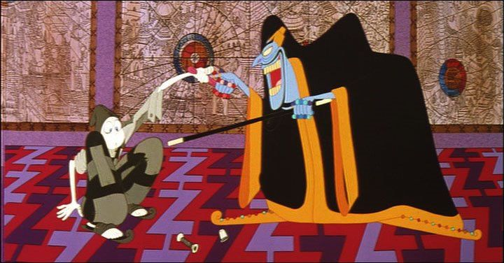

As a teenager, I distinctly remember the blue DVD cover of "The Thief and the Cobbler." I never owned the DVD, but I remember it being a constant poster child in paper flyers from Best Buy as one of many family films you could purchase for under $5 in the bargin bin. The poster art looked generic, like a rip-off of Disney's "Aladdin," which based on the film's original release date, it could easily be confused as such. About a decade later, I felt horrible in not purchasing a copy when I had the chance: today, the film has long been out of print, and only grown in cult status in the animation community. In 2018, the closest I could come to a physical copy was a 10-pack family film set from Echo Bridge Home Entertainment for $20, cramming five films per DVD, and resulting in a sub-240p-level quality video in order to fit. Shortly after, I purchased a DVD copy of the documentary "Persistence of Vision," a film dedicated to the backstory of the making of "The Thief," which included a copy of the original "workprint" of the movie before its' final release as an extra. While at better quality, it still looks like it was ripped off an old VHS (and being a workprint, it probably was), and half of the footage was unfinished, using stand-in storyboards or rough pencil tests, and almost completely lacking a soundtrack. Today, the best option to view the movie is online, for free, as "The Re-Cobbled Cut," an unofficial fan-made director's cut and restoration of the story.But why are there so many versions? "The Thief and the Cobbler" is often reffered to as "the greatest animated film never made." It was directed as a passion project by Richard Williams, a master animator best known for serving as animation director for "Who Framed Roger Rabbit," for the animated openings of multiple "Pink Panther" movies, and several other lesser-known but widely respected films, shorts, and television commercials. "The Thief" was an idea in the works for decades, to be his greatest masterpiece, elevating animation as a true art form beyond simply children's entertainment. After painstaking work and multiple script rewrites, it eventually got funded in part by Warner Bros, but years later after going over-schedule and over-budget, the rights of the almost-finished movie would be sold off to Allied Filmmakers, then later to Miramax. Each new studio took the film's production by force, not finishing the remaining scenes, but adding completely new ones with musical numbers. Miramax's version contains English narration for characters who previously had no dialogue at all. Ultimately, partly due to difficulty in marketing, and uncertainty of what the final film actually was, it bombed at the box office, never making back close to its original budget. Who was at fault for this troubled production? Richard Williams was clearly heartbroken, refusing to talk about the movie for decades after its release. Was he too much of a perfectionist, asking for the impossible and rewriting things at the expense of his artists, some of whom died of old age before they ever got paid? Were funding sources too strict in their expectations, and too unwilling to provide the necessary funds? We will likely never know the full story. That's part of the legend."The Thief" has a simplistic story, with the simplicity of an old fairy tale. Set in a fantasy Arabian-styled kingdom, the Cobbler, named Tack, is a poor but earnest worker who accidently finds himself offending the Grand Vizier, saved only by the kindness of the beautiful Princess Yum Yum. The Thief, who remains nameless in the story, is a dimwitted creature who sneaks around the kingdom, attempting to steal anything of remote value that he can carry in his shabby cloak. And Zig Zag, the evil Grand Vizier and advisor to the sleepy King, plots to take the kingdom for himself, and his plans are slowly coming to fruition for his control and power. While these three plot-threads of conflicting interests play out, a large army begins to cross the land to destroy the golden kingdom.  While it might seem like a lot is happening in the story, it retains simplicity because of a purposeful lack of dialogue. Zig Zag and the King are the most significant voices, with Zig Zag memorably voiced by Vincent Price, his last film appearance before his death (tragically, the movie was almost finished when he passed away). The rest of the voices receive barely a page-worth of dialogue, with Tack and the Thief completely mute. Zig Zag's dialogue is written entirely in prose, matching his character's deceptive and sweet-tongued words, further making this feel like a storybook. Even if the story doesn't achieve grandness, the theme that even the smallest things can make a big impact is a great life lesson to teach children.The greatest reason "The Thief and the Cobbler" is still talked about today is for its visuals. At a passing glance, it looks like a detailed Looney-Tunes cartoon, but even if the character designs and animation is inspried by that, such a comparison doesn't do it justice. The animation is incredibly smooth and detailed in motion. The layout shots and backgrounds are immaculately detailed, with a variety of colors and patterns. The camera is placed at interesting angles, and often, moves freely in the environment, in ways that had never been done before, for such a thing was simply too complicated. Chase scenes are set in rooms and hallways inspried by M.C. Escher and other optical illusionists, and sometimes like incredibly complicated Rube Goldberg machines. It's stunning to watch, and almost impossible to fathom being done by hand. Sometimes, that detail can be a detriment... with extreme wide shots showing tiny details in the distance, this movie not only could benefit from a 4K resotoration, it requires it. Anything less than 1080p almost makes the movie unwatchable. And sadly, no such official print will ever come to pass.... and what of the "official" American release by Miramax? While not as good as the original cut, there are elements to it that have a novelty value. The additional animated scenes, finished in Korea, can be pointed out for a clear difference in animation quality, even if the characters were still recognizable. The musical numbers are mostly poor, but one or two are admittedly catchy. Matthew Broderick is fine as Tack, although his character felt more appropriate when he didn't speak. Having Jonathan Winters voice the internal thoughts of the Thief feel horribly misguided: it's like trying to add voice-over for Wile E. Coyote. But despite sounding awkward, Winters is a master comedian, and there are a few ad-libs that are genuinely funny. And most of the animated content is from the original production, and still looks outstanding. It might not be a great movie due to its editing, but even the original cut was admittedly a bit longer than it ought to have been. Even if completed as intended, I hesitate to call "The Thief and the Cobbler" a perfect movie. In striving to be greater, it risks being a little long, a little less entertaining, a little less marketable. The edited versions that were officially released certainly didn't help, creating more issues than they fix, a perfect example of why artists so strongly fear corporate interference. But I still watch in awe at what was animated and what was designed. In some animated movies, there are a few minutes of mind-blowing animation you could watch over and over, never getting tired of it, and always feeling giddy at its sight, like watching dominoes fall one after the other in perfect harmony. In this movie, nearly every minute of the original cut, roughly 80% of the theatrical release, is like that. Every animation fan must see it, and for once, you would be encouraged to watch the free upload on YouTube.
- "Ani" More reviews can be found at : https://2danicritic.github.io/ Previous review: review_The_Testament_of_Sister_New_Devil Next review: review_The_Three_Caballeros